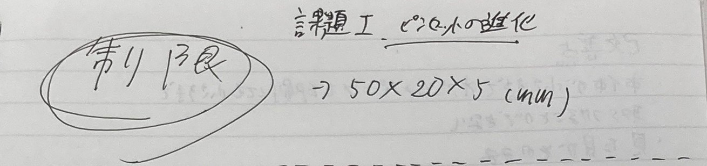
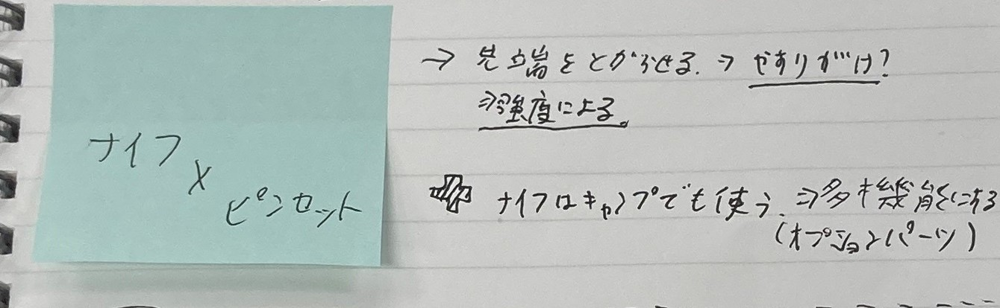
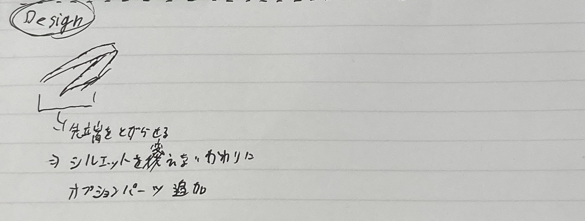
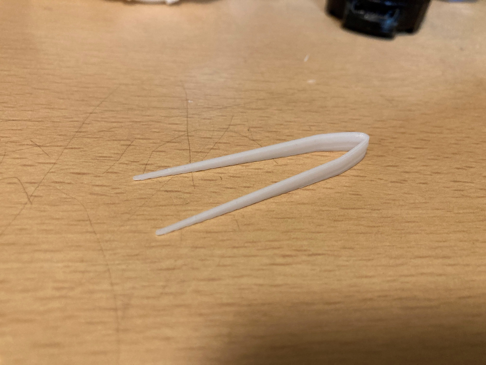

演習ノート一覧
10/16 2023
デジタルファブリケーション
何をモチーフにするか
これ一本で大体何とかなるツールが欲しかった。というのも私は昔からかなりのめんどくさがりでどんくらいめんどうかというとなにかを出し入れする時点で面倒だ。 なんというか言葉にするのが難しくてもうすでに面倒なんですがとにかくそういうわけでできるだけ多機能なものを作っていこうと思います。
構想段階の手書きスケッチ、ストーリーボードなどの写真
  実際に作った作品の画像
設計パーツ
Stlファイル
作品の説明
基本的な動作は普通のピンセットと同じではあるがそれ以外の機能も搭載した。 メインの機能は超小型のナイフとしての機能だ。これで細かい魚の下処理などができる。 またそれ以外の機能もオプションパーツとして考案してて、そのパーツをピンセットの先端に取り付けることで本来のピンセットとしての機能の代わりに きのみを割るツールや缶切りができるツール、ドライバーにもなりえる可能性を秘めている。
何故この作品を作ろうと思ったかの経緯
割と友達と山や川などいく機会が多く、そこでナイフを使ったりするのだが本体が大きすぎて細かい部分ができなかったり切りすぎて果汁や血が出てきてしまうことがしばしばあり、そこで超小型のナイフがあればいいと思った。 また、それだけでは物足りないため、ナックルパーツや缶切りパーツ、ドライバーパーツなどを考案している。